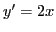

Next: Exercises Up: Differentiation Previous: Exercises Contents Index
We consider a theorem which is fundamental in all Differential Calculus to Geometry.
Let
Now differentiate (4.5) by the General Rule and interpret each step geometrically.
But when we let , the point will move along the curve and approach nearer and nearer to , the secant will turn about and approach the tangent as a limiting position, and we have also
It was this tangent problem that led Leibnitz4.6 to the discovery of the Differential Calculus.
Solution. Differentiating by General Rule, (§4.7), we get
To find slope of tangent at vertex, substitute in , giving
To find slope of tangent at the point , where , substitute in , giving
david joyner 2008-08-11